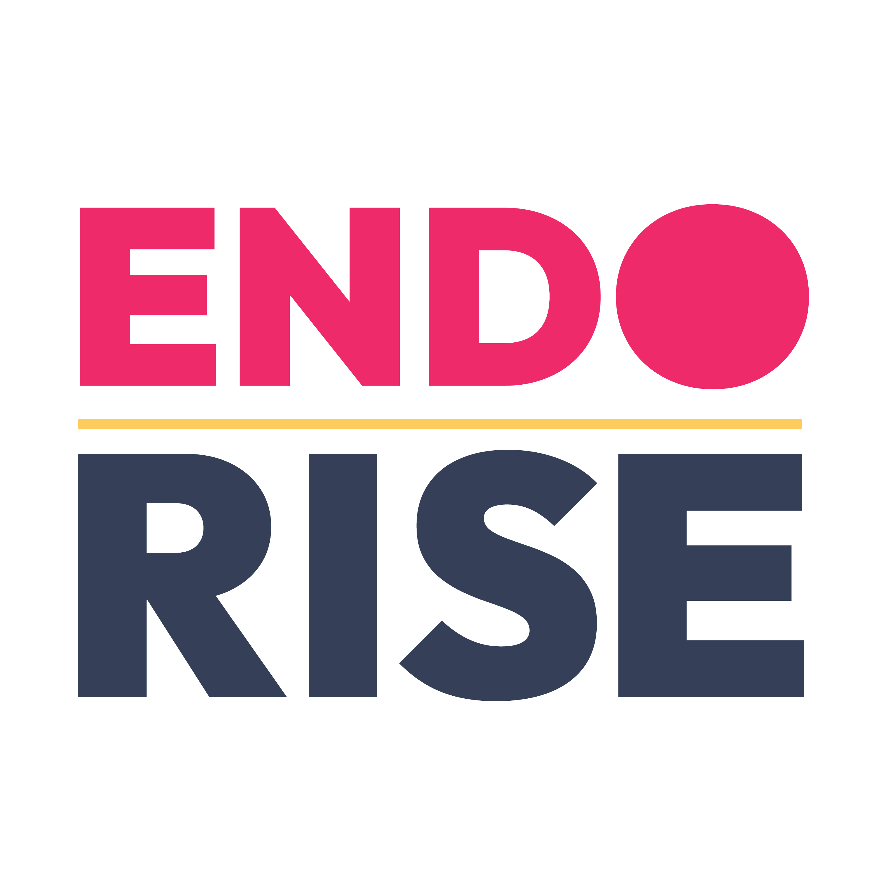

Back to Portfolio

In Progress
EndoRISE
ML pipeline for endometriosis research at The Jackson Laboratory
About
EndoRISE is a multi-site research initiative at The Jackson Laboratory studying endometriosis using de-identified patient data in collaboration with the Courtois Single Cell Biology Lab. I build and maintain the ML infrastructure supporting this work, focusing on patient stratification and the relationship between surgical inflammation markers and immune comorbidities.
Focus Areas
- Patient stratification using clustering analysis on EPHect-standardized clinical data
- Association analysis between inflammation markers and immune comorbidities
- Imaging and clinical phenotyping pipelines supporting discovery research across large patient cohorts
Technologies
Python
PyTorch
scikit-learn
Nextflow
AWS